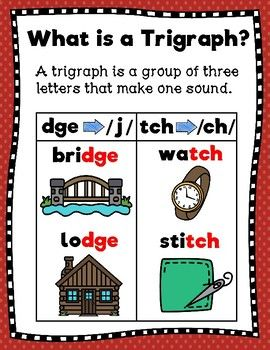
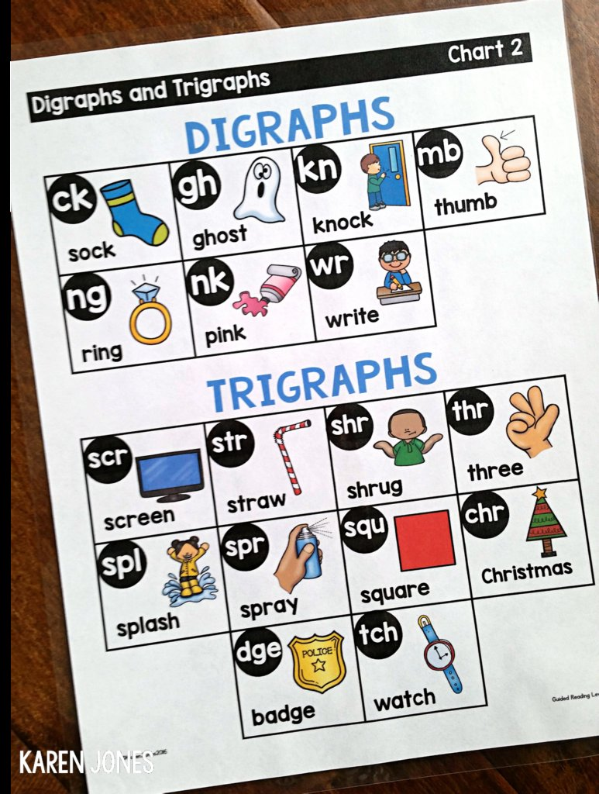
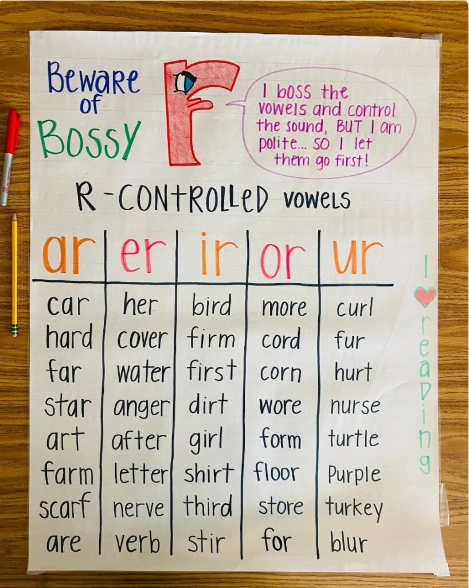
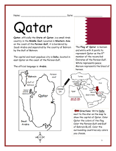
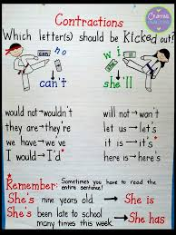

🏺 Week 16 of 35 — Unit 4: Our Past and Present
Week #: 16 of 35 (Unit 4, week 1 of 6) Dates: Jan 4 – Jan 7, 2027 | Unit: Unit 4: Our Past and Present | |
Math Curriculum
Unit Padlet
Reading (Research and Inquiry)
Grammar (Making Writing Clear and Precise)
Writing (Research and Inquiry)
Explore (Here and Now, There and Then)
Practice Websites
Grammar Quest - Daily Oral Language
Maths Quest Pro - Master Your Math Facts!
Extra Math Resources
Unit 1: Math (Place Value and Operations)
Unit 2: Math (Measurement and Data)
Unit 4: Math (Multiplication and Division)
Unit 6: Math (Algebra, FDP, Fractions)
Class | Sunday | Monday | Tuesday | Wednesday | Thursday |
This week's updates / notes: | Term 2 begins. Students return Mon Jan 4 — Sun Jan 3 is staff-only (no students), so this is a 4-day week (Mon–Thu). Alter/catch up lessons as needed after Winter Break. No students this day: any lessons planned below for this day need to be moved. Grey italic text = added in the October 2026 template update (not in the original plan). | No notes for this day. | No notes for this day. | No notes for this day. | No notes for this day. |
Morning Meeting / SEL | Week #10/#11 SEL Lesson- Standard 2: Relationship Skills. Objective for this week is: "Recognize others' feelings, understand what 'Empathy' is." SEL Question of the day practice 5A- Individual Activity to Whole Group Meeting 5B- One to One Enrichment 5C- Morning Practice | Week #10/#11 SEL Lesson- Standard 2: Relationship Skills. Objective for this week is: "Recognize others' feelings, understand what 'Empathy' is." SEL Question of the day practice 5A- Individual Activity to Whole Group Meeting 5B- One to One Enrichment 5C- Morning Practice | Week #10/#11 SEL Lesson- Standard 2: Relationship Skills. Objective for this week is: "Recognize others' feelings, understand what 'Empathy' is." SEL Question of the day practice 5A- Individual Activity to Whole Group Meeting 5B- One to One Enrichment 5C- Morning Practice | Week #10/#11 SEL Lesson- Standard 2: Relationship Skills. Objective for this week is: "Recognize others' feelings, understand what 'Empathy' is." SEL Question of the day practice 5A- Individual Activity to Whole Group Meeting 5B- One to One Enrichment 5C- Morning Practice | Week #10/#11 SEL Lesson- Standard 2: Relationship Skills. Objective for this week is: "Recognize others' feelings, understand what 'Empathy' is." SEL Question of the day practice 5A- Individual Activity to Whole Group Meeting 5B- One to One Enrichment 5C- Morning Practice |
Literacy: Vocabulary & Spelling Standards | No students this day (see notes). | CC L.5.4, L.5.6, L.5.2.E, RF.5.3 · EE.L.5.4, EE.L.5.6, EE.L.5.2.H, EE.RF.5.3 | CC L.5.4, L.5.6 · EE.L.5.4, EE.L.5.6 | CC L.5.4, L.5.6 · EE.L.5.4, EE.L.5.6 | CC L.5.4, L.5.6, L.5.2.E, RF.5.3 · EE.L.5.4, EE.L.5.6, EE.L.5.2.H, EE.RF.5.3 |
Literacy: Vocabulary & Spelling Activities/Tasks (Differentiation) Routine: give the definition first (no guessing) → students share where they might use it, similar/different words. Morphology, examples/non-examples, synonyms/antonyms & more on the vocabulary cards: Vocabulary Padlet (incl. Spelling: words Mon · test Thu) | G5: revise — To change or improve a piece of writing by reading it again carefully. G3: construct — To build or put together by combining parts or materials. Unit: strategy — A plan of action designed to achieve a long-term or overall goal. | G5: clarify — To make something easier to understand by explaining it more clearly. G3: fortress — A large, strong building or group of buildings built to defend against attack. Unit: consecutive — Following one after another without interruption. Spelling — introduce Week 16 lists (practice all week). Low (Building Spelling Skills, List 16): too, good, book, shook, school, when, what, took, who, soon High (Building Spelling Skills, List 16): leaf, leaves, wolf, wolves, potato, potatoes, roof, roofs, family, families, library, libraries, journey, journeys, hero, heroes, ditch, ditches | G5: elaborate — To add more details or information to explain something better. G3: apprentice — A person who learns a trade or skill by working with an expert. Unit: metaphor — A figure of speech that compares two unlike things by saying one thing IS another, without using 'like' or 'as.' | G5: precise — Exact and accurate in every detail. G3: inhabit — To live in or occupy a particular place. Unit: exhibit — A public display of objects, artworks, or artifacts in a museum or gallery. | G5: concise — Giving information clearly using only a few words. G3: realm — A kingdom or area ruled by a king or queen; also, an area of activity or interest. Unit: symbolize — To represent or stand for something else, especially an idea or quality. |
Literacy: Vocabulary & Spelling Assessment (Differentiation) | No students this day (see notes). | Quick check: Use today's word in a spoken or written sentence. Low: match the word to a picture or definition. Mid: complete a sentence frame. High: write an original sentence. | Quick check: Use today's word in a spoken or written sentence. Low: match the word to a picture or definition. Mid: complete a sentence frame. High: write an original sentence. | Quick check: Use today's word in a spoken or written sentence. Low: match the word to a picture or definition. Mid: complete a sentence frame. High: write an original sentence. | Spelling test — Week 16 lists (Low: List 16 · High: List 16). |
Literacy: Reading Standards | No students this day (see notes). | CC RF.5.3, RI.5.2, W.5.8 · EE.RF.5.3, EE.RI.5.2, EE.W.5.8 | CC RL.5.10, RI.5.10 · EE.RL.5.10, EE.RI.5.10 | CC RI.5.7, W.5.7 · EE.RI.5.7, EE.W.5.7 | CC RI.5.7, W.5.7, SL.5.4 · EE.RI.5.7, EE.W.5.7, EE.SL.5.4 |
Literacy: Reading Activities/Tasks (Differentiation) | Guided Reading: Activities: Watch What is Note-Taking? (4 min). Teacher explains the difference between writing full sentences and taking quick, useful notes. Practice: Students practice summarizing a short paragraph into bullet points. Story to Summarize Each Paragraph Landmarks and settings in Qatar Qatar Word - Pic Activity.pdf - linked to Explore Rotations: SeeSaw Trigraph - dge · Initial trigraph · Note Taking Activity · Making Notes IXL: Digraphs · Digraphs (sort) · Control R Sound · Complete the word - Control R · Match the sentence - Control R Google Classroom/Worksheets, Boom Cards, RazKids, EPIC, Book Bag, Writing station, Kahoot Anchor charts / resources (from the 2025-26 plan): Trigraphs and Digraphs Review Digraphs and Watch this video: Trigraphs   Watch the video: The R Controlled Syllable Type Song #rcontrolled Watch Video: Brainpop Bossy R  | Guided Reading: Continue with the previous lesson on note taking. Please use any of the linked stories that aligns with Explore. Rotations: see list from Sunday or the differentiation section below. | Guided Reading: Review/Catch-up. Rotations: see list from Sunday or the differentiation section below. | Guided Reading/Writing: Activities: Students choose one fun topic related to Qatar (e.g., camel racing, the 2022 World Cup, or dhow boats). Research using resources like National Geographic Kids or Duckster or teacher-provided texts. Create a list of facts, organized by subtopic, using commas for lists and dates as needed. | Guided Reading/Writing: Students continue to work on short mini research presentations from the previous day. |
Literacy: Reading Assessment (Differentiation) | Informal- SeeSaw Assignment | Informal- SeeSaw Assignment | Informal- SeeSaw Assignment | Informal- SeeSaw Assignment | Informal- SeeSaw Assignment |
Literacy: Writing / Language Standards (Language Sun & Tue · Writing Mon & Wed · Thu catch-up) | No students this day (see notes). | CC W.5.7, W.5.8 · EE.W.5.7, EE.W.5.8 | CC L.5.1.B · EE.L.5.1.C | CC W.5.7 · EE.W.5.7 | CC L.5.1.A, L.5.1.B, W.5.7, W.5.8 · EE.L.5.1.J, EE.L.5.1.C, EE.W.5.7, EE.W.5.8 |
Literacy: Writing / Language Activities/Tasks (Differentiation) IXL this week: Low: Complete the sentence with the best verb (G1) High: Use the correct subject or verb (G3) · To be: use the correct form (G3) Stretch: Use the correct subject or verb (G5) · Use the correct subject or verb - with compound subjects (G5) | Grammar (Sun) — Subject-Verb Agreement OBJ: Match verbs to singular and plural subjects Packets — Low (K-1): K: Review: Verbs/Prepositions/Pronouns (oral SVA practice), G1: L3.1 Subject-Verb Agreement · Mid (2-3): G2: L3.1 SVA — Adding s, G2: L3.2 SVA — Adding es, G3: L3.1 SVA — Adding s and es · High (4-6): G4: L3.1 SVA — Adding s and es, G5: L1.13 Subject-Verb Agreement, G6: L1.10 Subject-Verb Agreement History text: The settlers travel west. Moved here from Reading: | Writing — What is research? Choose a focused topic Watch a short What is Research? for Kids clip and discuss why researchers check reliable sources. Model narrowing "Qatar" into a focused topic with a mind map; students choose their own topic and sort example sources reliable vs unreliable; co-build the rubric. Grammar link: proper nouns for the topic's people/places/things. TWR: because/but/so in content — "Qatar changed quickly because... / but... / so..." — say, then write one. The mind map stays key-words-only. Unit resources: Unit 4 Research Padlet — Grammar Padlet: Making Writing Clear & Precise (export) IXL: Identify questions (G1) — Statement, question, command, exclamation? (G3) — Stretch: General to specific (G4) — Read about history (G5) Writing anchor charts / resources (from the 2025-26 plan): Teacher models using a graphic organizer with categories like "History," "Culture," and "Landmarks" for Qatar. Students organize notes about Qatar into the provided template.  | Grammar (Tue) — Irregular Verbs — Am/Is/Are & Has/Have OBJ: Correctly use forms of to be and to have in present tense Packets — Low (K-1): K: L2.3 Verbs (oral am/is/are practice), G1: L3.2 Irregular Verbs — Am, Is, Are · Mid (2-3): G2: L3.3 Irregular Verbs — Am, Is, Are, G2: L3.4 Irregular Verbs — Has, Have, G2: Review: SVA and Irregular Verbs, G3: L3.2 Irregular Verbs — Am, Is, Are, G3: L3.3 Irregular Verbs — Has, Have, G3: Review: SVA and Irregular Verbs · High (4-6): G4: Review — SVA and Regular/Irregular Past-Tense Verbs, G5: L1.8 Verbs — Regular Present and Past (present focus), G6: L1.8 Verbs — Regular Present and Past (present focus) Historical photos: She is a farmer. Grammar anchor charts / resources (from the 2025-26 plan): Explain how apostrophes indicate possession (e.g., "Qatar’s flag is maroon and white."). Qatar Fact: Use examples like "The dhow’s sails are white" and "Doha’s skyline is modern."  | Writing — Write three research questions Model turning a topic into a real question ("What...", "Why...", "How..."), not yes/no. Students write THREE research questions, then trade with a partner to check none can be answered in a single word. TWR: question-word expansion — Low matches question-word cards to half-built questions and copies the best; Med completes stems ("Why does ___?"); High writes three and applies the one-word rule. Resources: How to Choose a Research Topic | Catch-up day — reteach or extend this week's grammar and writing; finish unfinished drafts; assign this week's IXL practice (links in the left column: Low = reteach, High = consolidate, Stretch = extension). |
Literacy: Writing / Language Assessment (Differentiation) | No students this day (see notes). | Writing check: Check today's writing against the co-built rubric (one target from today's lesson). Low: oral rehearsal first, then a sentence frame or labelled picture. Mid: word bank and a partner check. High: independent, plus one stretch goal. | Language check: Write 3 to 5 sentences that apply today's rule; use this week's IXL skill. Low: K-1 packet page with teacher support. Mid: Grades 2-3 packet page. High: Grades 4-6 packet page or IXL Stretch. | Writing check: Check today's writing against the co-built rubric (one target from today's lesson). Low: oral rehearsal first, then a sentence frame or labelled picture. Mid: word bank and a partner check. High: independent, plus one stretch goal. | Catch-up check: Check IXL SmartScores on this week's language skills and conference with 2 to 3 writers on unfinished drafts. |
Math Standards (pacing W15, from the Awsaj Math Curriculum) | STANDARD Assessment / consolidation week: no new small steps in this strand. | PRIORITY Assessment / consolidation week: no new small steps in this strand. | INTERVENTION Assessment / consolidation week: no new small steps in this strand. | ||
Math Activities/Tasks (Differentiation) Pacing W15 · B5 Converting units W12–W16 | STANDARD · ~4 new / wk 3× support block — pick from the panel below Term-1 assessment · Paper A Term-1 assessment · Paper B Differentiation: Each lesson includes partner practice, common misperceptions independent practice, and a challenge question for differentiation. | PRIORITY · ~3 new / wk 3× support block — pick from the panel below Term-1 assessment · Paper A Term-1 assessment · Paper B Differentiation: Each lesson includes partner practice, common misperceptions independent practice, and a challenge question for differentiation. | INTERVENTION · ~2 new / wk 3× support block — pick from the panel below Term-1 assessment · Paper A Term-1 assessment · Paper B Differentiation: Each lesson includes partner practice, common misperceptions independent practice, and a challenge question for differentiation. | ||
Math: Support Block Activities/Tasks (pick one) | Rec/PK4 · 1 less · Y1/KG · Tell the time to the half hour · Y2/Gr.1 · The 10 times-table · Y3/Gr.2 · Estimate on a number line to 1,000 · Y4/Gr.3 · Divide a 3-digit number by a 1-digit number · Y4/Gr.3 · Calculate with money (US: dollars & cents) (review) · Y5/Gr.4 · Multi-step addition and subtraction problems (review) · Y5/Gr.4 · Calculate a fraction of a quantity (pre-teach) · Y5/Gr.4 · Kilograms and kilometres (review) · Y5/Gr.4 · Millimetres and millilitres (review) · Y5/Gr.4 · Convert between metric and imperial units (pre-teach) | ||||
Math Assessment (Differentiation) | No students this day (see notes). | Exit check: 2 to 3 questions from each strand's SHEET or T/F slide at the end of the lesson. Intervention: with the TA sheet and concrete materials. Priority: partner then independent. Standard: independent plus the challenge question. | Exit check: 2 to 3 questions from each strand's SHEET or T/F slide at the end of the lesson. Intervention: with the TA sheet and concrete materials. Priority: partner then independent. Standard: independent plus the challenge question. | Exit check: 2 to 3 questions from each strand's SHEET or T/F slide at the end of the lesson. Intervention: with the TA sheet and concrete materials. Priority: partner then independent. Standard: independent plus the challenge question. | IXL Formative Assessment Assessment: Term-1 assessment · Paper A Assessment: Term-1 assessment · Paper B |
Science and/or Social Studies Standards Explore | No students this day (see notes). | 4.5.c | 4.5.c | 4.5.c | 4.5.c |
Activities/Tasks (Differentiation) Explore 3-day plan (Mon–Wed) Our Country: Qatar IXL this week: Low: Identify Oceans and Continents (Gr 2) · High: Identify Oceans and Continents (Gr 4) Stretch: Name Oceans and Continents (Gr 4) · Land Features Using Satellite Images (Gr 5) | Entry Point (Day 1 — Sunday): Entry Point — Sheikh Faisal Museum Visit · done on the SUNDAY the unit starts (Day 1) Entry task: a visit to the Sheikh Faisal Bin Qassim Al Thani Museum — explorers see real objects from Qatar’s past (tools, cars, tents) and record ‘then vs now’ wonders. Set the mission: explorers will create a Qatar Showcase (Week 6) telling the story of how Qatar changed from the past to the present. Entry resources: Entry task (Padlet) · 3-2-1 Self-Reflection (Padlet · Unit 4 · stable link). | Mon · Hook + Investigate ▶ Hook video: History of Qatar (≈4 min) Vocab: country, capital, symbol, culture. Investigate (kept): ‘What is a country?’ Map Qatar — Doha, Al Khor, Al Wakrah; Qatari symbols (flag, oryx, Souq Waqif, MIA). Objective: Name Qatar’s capital and identify at least two national symbols (flag, oryx, Souq Waqif, MIA). | Tue · Apply + Record Apply (kept): home vs host country; compare Qatar with another country (traditions, weather, buildings). Epic read: ‘Countries of the World’ — find Qatar (Epic collection). Reading (Gr 2-3): 'Qatar: Then and Now' (Grade 2-3 Readings Pack) · Readings Pack — ADD PADLET LINK | Wed · Review + Check Start the country collage (kept): trace Qatar’s shape; plan materials (sandpaper desert, blue tissue water). Review. Resource: Qatar symbols & collage photo set — ADD PADLET LINK | Review / catch-up — consolidate Mon–Wed learning; complete recordings/reflections; reteach or extend as needed. |
Assessment (Differentiation) Explore | No students this day (see notes). | Assessment: Point to Qatar on a map and name one symbol shown; explain what it represents. Differentiation: Point to the flag/oryx picture with adult support / name one symbol with some support / name and locate Doha, Al Khor, and Al Wakrah independently. | Exit check: Name one way Qatar is the same as or different from another country. Low: point to picture cards with adult support. Mid: use the frame 'Qatar has ___, but ___ has ___.' High: write two comparisons with reasons. | Exit check: Explain one collage material choice and the part of Qatar it shows. Low: point and name it. Mid: use the frame 'I used ___ to show ___.' High: explain two choices. | Review check: Students explain one thing they learned in Explore this week, using a key word from the unit. Low: point and say with a picture. Mid: sentence frame. High: written explanation. |
Closing Circle (SELG) | No students this day (see notes). | Closing circle: students reflect on today's learning and the week's PL goal. | Closing circle: students reflect on today's learning and the week's PL goal. | Closing circle: students reflect on today's learning and the week's PL goal. | Closing circle: students reflect on today's learning and the week's PL goal. |